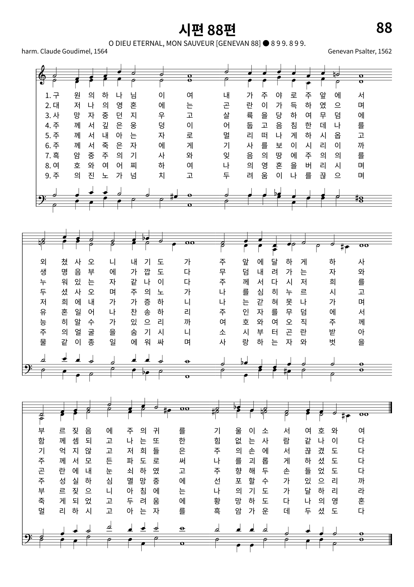

Psalm 88
O DIEU ETERNAL, MON SAUVEUR [GENEVAN 88] · 8 9 9. 8 9 9.
English title: O God, I Call for Help by Day
Tune: Genevan Psalter, 1562 · Harmony: Claude Goudimel, 1564 · Lyrics: Korean adaptation of Psalm 88 from the Korean Revised Version (AI draft adaptation · not yet theologically reviewed) · 9 stanzas
Score PDF MusicXML (for printing) MusicXML (for accompaniment, with prelude and repeats) Read Psalm 88 (Korean Revised Version)
Score
← Psalm 87 ListAccompaniment (in preparation)Psalm 89A →
Lyrics (Korean)
Stanza 1 (Ps. 1-2)
구원의 하나님이여
내가 주야로 주 앞에서
외쳤사오니 내 기도가
주 앞에 달하게 하사
부르짖음에 주의 귀를
기울이소서 여호와여
구원의 하나님이여
내가 주야로 주 앞에서
외쳤사오니 내 기도가
주 앞에 달하게 하사
부르짖음에 주의 귀를
기울이소서 여호와여
Stanza 2 (Ps. 3-4)
대저 나의 영혼에는
곤란이 가득하였으며
생명 음부에 가깝도다
무덤 내려가는 자와
함께 셈 되고 나는 또한
힘없는 사람 같나이다
대저 나의 영혼에는
곤란이 가득하였으며
생명 음부에 가깝도다
무덤 내려가는 자와
함께 셈 되고 나는 또한
힘없는 사람 같나이다
Stanza 3 (Ps. 5)
사망자 중 던지우고
살륙을 당하여 무덤에
누워 있는 자 같나이다
주께서 다시 저희를
기억지 않고 저희들은
주의 손에서 끊겼도다
사망자 중 던지우고
살륙을 당하여 무덤에
누워 있는 자 같나이다
주께서 다시 저희를
기억지 않고 저희들은
주의 손에서 끊겼도다
Stanza 4 (Ps. 6-7)
주께서 깊은 웅덩이
어둡고 음침한 데 나를
두셨사오며 주의 노가
나를 심히 누르시고
주께서 모든 파도로써
나를 괴롭게 하셨도다
주께서 깊은 웅덩이
어둡고 음침한 데 나를
두셨사오며 주의 노가
나를 심히 누르시고
주께서 모든 파도로써
나를 괴롭게 하셨도다
Stanza 5 (Ps. 8-9)
주께서 내 아는 자로
멀리 떠나게 하시옵고
저희에 내가 가증하니
나는 갇혀 못 나가며
곤란에 내 눈 쇠하였고
주 향해 두 손 들었도다
주께서 내 아는 자로
멀리 떠나게 하시옵고
저희에 내가 가증하니
나는 갇혀 못 나가며
곤란에 내 눈 쇠하였고
주 향해 두 손 들었도다
Stanza 6 (Ps. 10-11)
주께서 죽은 자에게
기사를 보이시리이까
유혼 일어나 찬송하리
주 인자를 무덤에서
주 성실하심 멸망 중에
선포할 수가 있으리까
주께서 죽은 자에게
기사를 보이시리이까
유혼 일어나 찬송하리
주 인자를 무덤에서
주 성실하심 멸망 중에
선포할 수가 있으리까
Stanza 7 (Ps. 12-13)
흑암 중 주의 기사와
잊음의 땅에 주의 의를
능히 알 수가 있으리까
여호와여 오직 주께
부르짖으니 아침에는
나의 기도가 달하리라
흑암 중 주의 기사와
잊음의 땅에 주의 의를
능히 알 수가 있으리까
여호와여 오직 주께
부르짖으니 아침에는
나의 기도가 달하리라
Stanza 8 (Ps. 14-15)
여호와여 어찌하여
나의 영혼을 버리시며
주의 얼굴을 숨기시니
소시부터 곤란 받아
죽게 되었고 두려움에
황망하도다 나의 영혼
여호와여 어찌하여
나의 영혼을 버리시며
주의 얼굴을 숨기시니
소시부터 곤란 받아
죽게 되었고 두려움에
황망하도다 나의 영혼
Stanza 9 (Ps. 16-18)
주의 진노가 넘치고
두려움이 나를 끊으며
물 같이 종일 에워싸며
사랑하는 자와 벗을
멀리 하시고 아는 자를
흑암 가운데 두셨도다
주의 진노가 넘치고
두려움이 나를 끊으며
물 같이 종일 에워싸며
사랑하는 자와 벗을
멀리 하시고 아는 자를
흑암 가운데 두셨도다